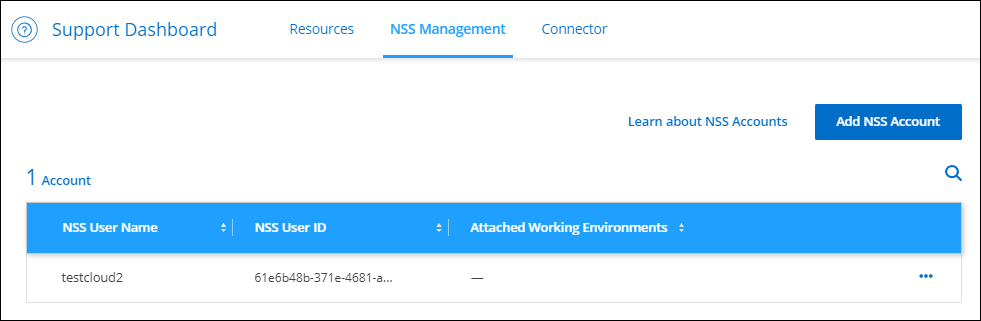

문서 변경 요청
문서 변경 요청 이 페이지 편집
이 페이지 편집 기여하는 방법 자세히 알아보기
기여하는 방법 자세히 알아보기새로운 기능
Cloud Manager의 관리 기능, 즉 NetApp 계정, 커넥터, 클라우드 공급자 자격 증명 등과 관련된 새로운 기능에 대해 알아보십시오.
2022년 7월 3일
커넥터 3.9.20
-
Cloud Manager 인터페이스에 추가된 새로운 기능을 탐색하는 방법이 도입되었습니다. 이제 왼쪽 패널 위로 마우스를 이동하면 익숙한 Cloud Manager 기능을 모두 쉽게 찾을 수 있습니다.

-
이제 Cloud Manager를 구성하여 시스템에 로그인하지 않아도 중요한 시스템 작업을 이메일로 통지할 수 있습니다.
-
Cloud Manager는 이제 Amazon S3 지원과 비슷하게 Azure Blob 스토리지 및 Google Cloud Storage를 작업 환경으로 지원합니다.
Azure 또는 Google Cloud에 Connector를 설치한 후 Cloud Manager는 이제 Connector가 설치된 프로젝트의 Azure Blob 스토리지 또는 Google Cloud Storage에 대한 정보를 자동으로 검색합니다. Cloud Manager는 오브젝트 스토리지를 작업 환경으로 표시하여 더 자세한 정보를 볼 수 있도록 합니다.
Azure Blob 작업 환경의 예는 다음과 같습니다.

-
NetApp은 용량, 암호화 세부 정보 등과 같은 S3 버킷에 대한 자세한 정보를 제공하여 Amazon S3 작업 환경의 리소스 페이지를 재설계했습니다.
-
Connector는 이제 다음 Google Cloud 영역에서 지원됩니다.
-
마드리드(유럽 - 남서쪽1)
-
파리(유럽 - west9)
-
바르샤바(유럽-중중심2)
-
-
이제 커넥터는 Azure West US 3 지역에서 지원됩니다.
-
이 커넥터 릴리스에는 Cloud Volumes ONTAP의 향상된 기능도 포함되어 있습니다.
2022년 6월 28일
NetApp 자격 증명으로 로그인합니다
새로운 사용자가 Cloud Central에 등록하면 이제 NetApp * 옵션을 사용하여 로그인 * 을 선택하여 NetApp Support 사이트 자격 증명으로 로그인할 수 있습니다. 이 방법은 전자 메일 주소와 암호를 입력하는 대신 사용됩니다.

|
전자 메일 주소와 암호를 사용하는 기존 로그인은 해당 로그인 방법을 계속 사용해야 합니다. NetApp으로 로그인 옵션은 등록하는 새 사용자를 위해 사용할 수 있습니다. |
2022년 6월 7일
커넥터 3.9.19
-
커넥터는 현재 AWS 자카르타 지역(AP-동남동-3)에서 지원됩니다.
-
이제 Connector는 Azure Brazil Southeast 지역에서 지원됩니다.
-
이번 커넥터 릴리즈에는 Cloud Volumes ONTAP의 향상된 기능과 사내 ONTAP 클러스터의 향상된 기능도 포함되어 있습니다.
2022년 5월 12일
커넥터 3.9.18 패치
버그 수정을 소개하기 위해 Connector를 업데이트했습니다. 가장 주목할 만한 수정 사항은 커넥터가 공유 VPC에 있을 때 Google Cloud의 Cloud Volumes ONTAP 구축에 영향을 미치는 문제입니다.
2022년 5월 2일
커넥터 3.9.18
-
Connector는 이제 다음 Google Cloud 영역에서 지원됩니다.
-
델리(아시아 - 남쪽 2)
-
멜번(호주 - 수테스토2)
-
밀라노(유럽 - west8)
-
산티아고(사우스메리카 - 웨스투트어)
-
-
Connector에 사용할 Google Cloud 서비스 계정을 선택하면 Cloud Manager에 각 서비스 계정과 연결된 이메일 주소가 표시됩니다. 이메일 주소를 보면 동일한 이름을 공유하는 서비스 계정을 쉽게 구별할 수 있습니다.

-
당사는 지원하는 OS를 통해 VM 인스턴스에서 Google Cloud의 Connector를 인증했습니다 "차폐된 VM 기능"
-
이 커넥터 릴리스에는 Cloud Volumes ONTAP의 향상된 기능도 포함되어 있습니다. "이러한 향상된 기능에 대해 알아보십시오"
-
Connector에서 Cloud Volumes ONTAP를 구축하려면 새로운 AWS 권한이 필요합니다.
이제 AZ(단일 가용성 영역)에 HA 쌍을 구축할 때 AWS 분산 배치 그룹을 생성하려면 다음 권한이 필요합니다.
"ec2:DescribePlacementGroups", "iam:GetRolePolicy",이제 Cloud Manager에서 배치 그룹을 만드는 방법을 최적화하려면 이러한 권한이 필요합니다.
Cloud Manager에 추가한 각 AWS 자격 증명 세트에 이러한 권한을 제공해야 합니다. "Connector에 대한 최신 IAM 정책을 봅니다".
2022년 4월 3일
커넥터 3.9.17
-
이제 Cloud Manager가 사용자 환경에서 설정한 IAM 역할을 가정하도록 하여 Connector를 생성할 수 있습니다. 이 인증 방법은 AWS 액세스 키와 비밀 키를 공유하는 것보다 더 안전합니다.
-
이 커넥터 릴리스에는 Cloud Volumes ONTAP의 향상된 기능도 포함되어 있습니다. "이러한 향상된 기능에 대해 알아보십시오"
2022년 2월 27일
커넥터 3.9.16
-
Google Cloud에서 새 Connector를 만들면 Cloud Manager에 기존의 모든 방화벽 정책이 표시됩니다. 이전에는 Cloud Manager에 타겟 태그가 없는 정책이 표시되지 않았습니다.
-
이 커넥터 릴리스에는 Cloud Volumes ONTAP의 향상된 기능도 포함되어 있습니다. "이러한 향상된 기능에 대해 알아보십시오"
2022년 1월 30일
커넥터 3.9.15
이 커넥터 릴리스에는 Cloud Volumes ONTAP의 향상된 기능이 포함되어 있습니다. "이러한 향상된 기능에 대해 알아보십시오"
2022년 1월 2일
커넥터에 대한 EBS 디스크 암호화
Cloud Manager에서 AWS에 새 Connector를 구축하는 경우 이제 기본 마스터 키 또는 관리 키를 사용하여 Connector의 EBS 디스크를 암호화할 수 있습니다.

NSS 계정의 이메일 주소입니다
이제 Cloud Manager에서 NetApp Support 사이트 계정과 연결된 이메일 주소를 표시할 수 있습니다.

2021년 11월 28일
NetApp Support 사이트 계정을 위해 업데이트해야 합니다
2021년 12월부터 NetApp은 Microsoft Azure Active Directory를 지원 및 라이선싱과 관련된 인증 서비스의 ID 공급자로 사용합니다. 이 업데이트의 결과로, Cloud Manager에서 이전에 추가한 기존 NetApp Support 사이트 계정의 자격 증명을 업데이트하라는 메시지를 표시합니다.
NSS 계정을 IDaaS로 마이그레이션하지 않은 경우 먼저 계정을 마이그레이션한 다음 Cloud Manager에서 자격 증명을 업데이트해야 합니다.
Cloud Volumes ONTAP의 NSS 계정을 변경합니다
조직에 여러 NetApp Support 사이트 계정이 있는 경우, 이제 Cloud Volumes ONTAP 시스템과 연결된 계정을 변경할 수 있습니다.
2021년 11월 4일
SOC 2 Type 2 인증
독립적인 인증 퍼블릭 회계 업체 및 서비스 감사자는 Cloud Manager, Cloud Sync, Cloud Tiering, Cloud Data Sense 및 Cloud Backup(Cloud Manager 플랫폼)을 검토하여 해당 Trust Services 기준을 기반으로 SOC 2 Type 2 보고서를 작성했다고 확인했습니다.
커넥터가 더 이상 프록시로 지원되지 않습니다
더 이상 Cloud Manager 커넥터를 프록시 서버로 사용하여 Cloud Volumes ONTAP에서 AutoSupport 메시지를 보낼 수 없습니다. 이 기능은 제거되었으며 더 이상 지원되지 않습니다. NAT 인스턴스 또는 환경의 프록시 서비스를 통해 AutoSupport 연결을 제공해야 합니다.
2021년 10월 31일
서비스 보안 주체를 사용한 인증
Microsoft Azure에서 새 Connector를 만들면 Azure 계정 자격 증명이 아닌 Azure 서비스 보안 주체를 사용하여 인증할 수 있습니다.
자격 증명 향상
사용하기 쉽고 Cloud Manager 인터페이스의 현재 모양과 느낌을 맞추기 위해 자격 증명 페이지를 다시 설계했습니다.
2021년 9월 2일
새 알림 서비스가 추가되었습니다
알림 서비스가 도입되어 현재 로그인 세션 중에 시작한 Cloud Manager 작업의 상태를 확인할 수 있습니다. 작업이 성공했는지 또는 실패했는지 확인할 수 있습니다. "계정의 작업을 모니터링하는 방법을 확인하십시오".
2021년 8월 1일
커넥터를 통한 RHEL 7.9 지원
이제 Connector는 Red Hat Enterprise Linux 7.9를 실행하는 호스트에서 지원됩니다.
2021년 7월 7일
커넥터 추가 마법사 기능 향상
새 옵션을 추가하고 사용하기 쉽도록 * 커넥터 추가 * 마법사를 다시 설계했습니다. 이제 태그를 추가하고, 역할을 지정하고(AWS 또는 Azure의 경우), 프록시 서버에 대한 루트 인증서를 업로드하고, Terraform 자동화에 대한 코드를 보고, 진행률 세부 정보를 보는 등의 작업을 수행할 수 있습니다.
NSS 지원 대시보드의 계정 관리
이제 NSS(NetApp Support Site) 계정은 Settings(설정) 메뉴가 아니라 Support Dashboard에서 관리됩니다. 이러한 변경을 통해 단일 위치에서 모든 지원 관련 정보를 쉽게 찾고 관리할 수 있습니다.

2021년 5월 5일
타임라인의 계정
이제 Cloud Manager의 타임라인에 계정 관리와 관련된 작업 및 이벤트가 표시됩니다. 이러한 동작에는 사용자 연결, 작업 영역 만들기, 커넥터 만들기 등이 있습니다. 특정 작업을 수행한 사람을 확인해야 하거나 작업의 상태를 확인해야 하는 경우 시간 표시 막대를 확인하는 것이 도움이 됩니다.
2021년 4월 11일
API는 Cloud Manager로 직접 호출합니다
프록시 서버를 구성한 경우 프록시를 통하지 않고 API 호출을 Cloud Manager로 직접 전송하는 옵션을 사용할 수 있습니다. 이 옵션은 AWS 또는 Google Cloud에서 실행되는 커넥터에서 지원됩니다.
서비스 계정 사용자
이제 서비스 계정 사용자를 만들 수 있습니다.
서비스 계정은 자동화를 위해 Cloud Manager에 승인된 API 호출을 수행할 수 있는 "사용자" 역할을 합니다. 따라서 언제든지 퇴사할 수 있는 실제 사용자의 계정을 기반으로 자동화 스크립트를 작성할 필요가 없으므로 자동화를 더욱 쉽게 관리할 수 있습니다. 페더레이션을 사용하는 경우 클라우드에서 새로 고침 토큰을 생성하지 않고 토큰을 생성할 수 있습니다.
개인 미리보기
이제 고객 어카운트의 프라이빗 미리보기 기능을 사용하여 Cloud Manager의 미리보기 기능을 이용하여 새로운 NetApp 클라우드 서비스에 액세스할 수 있습니다.
2021년 2월 9일
지원 대시보드 개선 사항
NetApp Support 사이트 자격 증명을 추가하여 지원을 등록할 수 있도록 지원 대시보드를 업데이트했습니다. 대시보드에서 직접 NetApp 지원 케이스를 시작할 수도 있습니다. 도움말 아이콘을 클릭한 다음 * 지원 * 을 클릭하십시오.